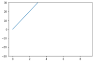

Regression
Table of Contents
即，根據一組預測特徵（predictor，如里程數、車齡、品牌）來預測目標數值（如二手車車價）1，這個目標數值也是label。
有些迴歸演算法也可以用來分類，例如Logistic，它可以輸出一個數值，以這個數值來表示對應到特定類別的機率，例如，某封email為垃圾郵件的機率為20%、某張圖片為狗的機率為70%。
迴歸問題可再細分為兩類：
- Linear regression:
- 假設輸入變量(x)與單一輸出變量(y)間存在線性關係，並以此建立模型。
- 優點: 簡單、容易解釋
- 缺點: 輸入與輸出變量關係為線性時會導致低度擬合
- 例: 身高與體重間的關係
- Logistic regression
- 也是線性方法，但使用logist function轉換輸出的預測結果，其輸出結果為類別機率(class probabilities)
- 優點: 簡單、容易解釋
- 缺點: 輸入與輸出變量關係為線性時無法處理分類問題
典型迴歸案例: Boston Housing Data
1. 迴歸原理
1.1. Step 1
- Model: \(y = w*x+b\)
- Data: 找一堆現成的資料
1.2. Step 2: Goodness of Function
- Training Data
- Loss function L: 越小越好 input: a function / output: how bad it is
- Pick the “Best: Function \(f* = arg min L(f)\) 上述可以微分來求最佳解，即求 function L 的最小值
- 數值最佳解: Gradient Descent(找拋物面最低點)
1.3. 迴歸實作
手刻 Deep Learning — 第零章 — 線性回歸 原始資料:

Figure 1: Caption
1: import numpy as np 2: import matplotlib.pyplot as plt 3: 4: def gen_data(X, a, b): 5: return X * a + b 6: 7: 8: ## 重新產生X, y，較合理，而非已存在一條線 9: X = np.array(range(1, 10)) 10: y = np.array([27, 35, 40, 50, 66, 60, 76, 88, 90]) 11: #y = gen_data(X, a=8, b=20) 12: 13: plt.scatter(X, y, color='black') 14: plt.plot(X, 1 * X + 1) 15: plt.plot(X, 4 * X + 10) 16: plt.plot(X, 4 * X + 10) 17: plt.plot(X, 8 * X + 30) 18: plt.ylim(0, 121) 19: plt.legend(['Raw Data', 'Line 1', 'Line 2', 'Line 3']) 20: plt.savefig("images/Xyh-1.png", dpi=300) 21: 22: a = 1 23: b = 1 24: yh = a * X + b #y hat 25: 26: 27: plt.plot(X, yh) 28: #plt.savefig("images/Xyh.png", dpi=300) 29: 30: def loss_func(y_true, y_predict): 31: return y_true - y_predict 32: 33: def optimizer(d, loss): 34: return np.mean(d * loss * 0.01) 35: 36: N = 1000 37: for i in range(N): 38: p_y = a * X + b 39: loss = loss_func(y, p_y) 40: a -= optimizer(-2 * X, loss) 41: b -= optimizer(-2, loss) 42: if i % int(N/10) == 0: 43: print('誤差: {:.2f}'.format(np.mean(loss)), '目前 a: {:.2f}, b: {:.2f}'.format(a, b)) 44: 45: yh = a * X + b #y hat 46: #plt.plot(X, yh) 47: #plt.legend(['Target', 'Initialization', 'Optimization']) 48: #plt.savefig("images/Xyh.png", dpi=300)
[[1] [2] [3] [4] [5] [6] [7] [8] [9]] 誤差: 53.11 目前 a: 7.27, b: 2.06 誤差: 2.11 目前 a: 9.84, b: 7.81 誤差: 1.40 目前 a: 9.29, b: 11.26 誤差: 0.93 目前 a: 8.93, b: 13.54 誤差: 0.61 目前 a: 8.69, b: 15.05 誤差: 0.41 目前 a: 8.53, b: 16.06 誤差: 0.27 目前 a: 8.42, b: 16.72 誤差: 0.18 目前 a: 8.35, b: 17.16 誤差: 0.12 目前 a: 8.31, b: 17.45 誤差: 0.08 目前 a: 8.28, b: 17.65

Figure 2: Caption
開始 Linear Regression (線性回歸)
練習投藍的時後，我們需要知道籃筐位置，誤差多少，做出丟球的修正；做 Machine Learning 也是一樣道理，我們需要 :
- 找出誤差
- 做出修正
所以我們這邊帶入兩個觀念:
- loss function (誤差計算，找出誤差)
- optimizer (最佳化方法，做出修正)
我們用程式碼來看 loss function: 其中 loss_func 的 y_true 表示商店的真實價格，y_predict 是我們預測的價格，我們這邊採用 真實價格 減去 預測價格，就是預測的誤差
1: def loss_func(y_true, y_predict): 2: return y_true - y_predict
optimizer: 這邊有個參數叫做 d ，其實他是 partial derivative ，這是微積分的概念。optimizer的修正並非最佳，可以自行修正找出最佳參數
1: def optimizer(d, loss): 2: return np.mean(d * loss * 0.01)
上面就是我們的訓練用程式碼，跑 1000 次訓練，每 100 次 ( N/10 ) 我們印出一次誤差讓我們看看過程 其中： a -= optimizer(-2 * X, loss) b -= optimizer(-2, loss) 這邊就是每次的訓練我們都在調整 a 與 b，就像是我們投籃丟歪球了，每次練習都在調整力道
各位可以試看看將 a 與 b 改成任意數值 ( 不要太過極端以免 overflow )，在這個訓練過程中，不管 a, b 初始是多少，都會逐漸往我們正確答案靠近，為什麼會這樣呢？
這就是微積分的力量
大多的 Machine Learning 也是類似這種方法，不停的 Training ( 訓練 ) 找到答案，微積分這部分日後有空再來解說 XD
微分: https://tree.rocks/deep-learning-from-scratch-introduce-differential-91f5b4400d1a
1.4. sklear版solution
1: import numpy as np 2: X = np.arange(1, 10).reshape(-1, 1) #轉換矩陣形狀以符合sklearn要求 3: y = [27, 35, 40, 50, 66, 60, 76, 88, 90] 4: 5: from sklearn.linear_model import LinearRegression 6: model = LinearRegression() 7: model.fit(X, y) 8: 9: print('Slope:', model.coef_) 10: print('Intercept:', model.intercept_)
Slope: [8.21666667] Intercept: 18.02777777777777
2. 簡單線性迴歸
2.1. Pizza
Let’s assume that you have recorded the diameters and prices of pizzas that you have previously eaten in your pizza journal. These observations comprise our training data:
| Diameter in inches | Price in dollars |
|---|---|
| 6 | 7 |
| 8 | 9 |
| 10 | 13 |
| 14 | 17.5 |
| 18 | 18 |
2.1.1. 觀察數據
We can visualize our training data by plotting it on a graph using matplotlib:
1: import numpy as np 2: # "np" and "plt" are common aliases for NumPy and Matplotlib, respectively. 3: import matplotlib.pyplot as plt 4: 5: # X represents the features of our training data, the diameters of the pizzas. 6: # A scikit–learn convention is to name the matrix of feature vectors X. 7: # Uppercase letters indicate matrices, and lowercase letters indicate vectors. 8: X = np.array([[6], [8], [10], [14], [18]]).reshape(-1, 1) 9: 10: y = [7, 9, 13, 17.5 , 18] 11: # y is a vector representing the prices of the pizzas. 12: 13: #plt.figure() 14: plt.title('Pizza price plotted against diameter') 15: plt.xlabel('Diameter in inches') 16: plt.ylabel('Price in dollars') 17: plt.plot(X, y, 'k.') 18: plt.axis([0, 25, 0, 25]) 19: plt.grid(True) 20: plt.savefig('images/pizza-1.png', dpi=300)
 We can see from the plot of the training data that there is a positive relationship between the diameter of a pizza and its price, which should be corroborated by our own pizza-eating experience.
We can see from the plot of the training data that there is a positive relationship between the diameter of a pizza and its price, which should be corroborated by our own pizza-eating experience.
2.1.2. 建模: LinearRegression
The following pizza price predictor program models this relationship using simple linear regression.
1: import numpy as np 2: X = np.array([[6], [8], [10], [14], [18]]).reshape(-1, 1) 3: y = [7, 9, 13, 17.5 , 18] 4: 5: print(X.shape) 6: 7: from sklearn.linear_model import LinearRegression 8: model = LinearRegression() 9: # Create an instance of the estimator 10: model.fit(X, y) 11: # Fit the model on the training data 12: 13: # Predict the price of a pizza with a diameter that has never been seen before 14: test_pizza = np.array([[12]]) 15: predicted_price = model.predict(test_pizza)[0] 16: print('A 12" pizza should cost: $%.2f' % predicted_price)
(5, 1) A 12" pizza should cost: $13.68
- The LinearRegression class is an estimator. Estimators predict a value based on observed data.
- In scikit-learn, all estimators implement the fit methods and predict.
- The fit method of LinearRegression learns the parameters of the following model for simple linear regression:\[y=\alpha+\beta x\]
- \(y\) is the predicted value of the response variable; in this example, it is the predicted price of the pizza.
- \(x\) is the explanatory variable.
- The intercept term \(\alpha\) and the coefficient \(\beta\) are parameters of the model that are learned by the learning algorithm.
- The hyperplane plotted in the following figure models the relationship between the size of a pizza and its price.
- Using training data to learn the values of the parameters for simple linear regression that produce the best fitting model is called ordinary least squares (OLS) or linear least squares.
1: import numpy as np 2: X = np.array([[6], [8], [10], [14], [18]]).reshape(-1, 1) 3: y = [7, 9, 13, 17.5 , 18] 4: 5: from sklearn.linear_model import LinearRegression 6: model = LinearRegression() 7: # Create an instance of the estimator 8: model.fit(X, y) 9: # Fit the model on the training data 10: 11: from matplotlib import pyplot as plt 12: plt.scatter(X, y, color = 'k') 13: plt.plot(X, model.predict(X), color='g') 14: plt.title('Pizza price plotted against diameter') 15: plt.xlabel('Diameter in inches') 16: plt.ylabel('Price in dollars') 17: plt.savefig('images/pizza-2.png', dpi=300)

Figure 3: Pizza regression 2
2.1.3. Evaluating the fitness of the model with a cost function
Regression lines produced by several sets of parameter values are plotted in the following figure. How can we assess which parameters produced the best-fitting regression line?
1: import numpy as np 2: X = np.array([[6], [8], [10], [14], [18]]).reshape(-1, 1) 3: y = [7, 9, 13, 17.5 , 18] 4: 5: from sklearn.linear_model import LinearRegression 6: model = LinearRegression() 7: # Create an instance of the estimator 8: model.fit(X, y) 9: # Fit the model on the training data 10: 11: from matplotlib import pyplot as plt 12: plt.scatter(X, y, color = 'k') 13: plt.plot(X, model.predict(X), color='g') 14: plt.plot(X, model.predict(X)+.5, color='c', linestyle='--') 15: plt.plot(X, model.predict(X)*.9, color='m', linestyle='-.') 16: plt.title('Pizza price plotted against diameter') 17: plt.xlabel('Diameter in inches') 18: plt.ylabel('Price in dollars') 19: plt.savefig('images/pizza-3.png', dpi=300) 20:

Figure 4: Pizza regression 3
- cost function
A cost function, also called a loss function, is used to define and measure the error of a model. The differences between the prices predicted by the model and the observed prices of the pizzas in the training set are called residuals, or training errors. The differences between the predicted and observed values in the test data are called prediction errors, or test errors.
1: import numpy as np 2: X = np.array([[6], [8], [10], [14], [18]]).reshape(-1, 1) 3: y = [7, 9, 13, 17.5 , 18] 4: 5: from sklearn.linear_model import LinearRegression 6: model = LinearRegression() 7: # Create an instance of the estimator 8: model.fit(X, y) 9: # Fit the model on the training data 10: 11: from matplotlib import pyplot as plt 12: 13: dy = (model.predict(X)-y)/2 14: for x, y1, y2 in zip(X, y, model.predict(X)): 15: xs = [x, x] 16: ys = [y1, y2] 17: plt.plot(xs, ys, color='orange') 18: plt.scatter(X, y, color = 'k') 19: plt.plot(X, model.predict(X), color='g') 20: #plt.errorbar(X, model.predict(X)-dy, yerr=dy, fmt='.') 21: plt.title('Pizza price plotted against diameter') 22: plt.xlabel('Diameter in inches') 23: plt.ylabel('Price in dollars') 24: plt.savefig('images/pizza-4.png', dpi=300)
 This measure of the model’s fitness is called the residual sum of squares (RSS) cost function. Formally, this function assesses the fitness of a model by summing the squared residuals for all of our training examples. The RSS is calculated with the formula in the following equation, where \(y_i\) is the observed value and \(f(x_i\) is the predicted value:\[SS_{res}=\sum_{i=1}^{n}(y_i-f(x_i))^2\]
This measure of the model’s fitness is called the residual sum of squares (RSS) cost function. Formally, this function assesses the fitness of a model by summing the squared residuals for all of our training examples. The RSS is calculated with the formula in the following equation, where \(y_i\) is the observed value and \(f(x_i\) is the predicted value:\[SS_{res}=\sum_{i=1}^{n}(y_i-f(x_i))^2\]
(add-to-list 'package-archives '("melpa" . "https://melpa.org/packages/")) (setq python-shell-interpreter "/usr/bin/python3") (setq python-shell-interpreter-arg "-i") (setq py-use-current-dir-when-execute-p t) (setq python-shell-prompt-detect-enabled nil) (setq python-shell-interpreter "ipython") (setq python-shell-interpreter-interactive-args "-i --simple-prompt")
(add-to-list 'package-archives '("melpa" . "https://melpa.org/packages/"))
import numpy as np import pandas as pd a = 3 print(a) data = [[1,2], [3,4]] pd.DataFrame(data, columns=["Foo", "Bar"])
Foo Bar 0 1 2 1 3 4
from ipywidgets import interact, interactive, fixed, interact_manual import ipywidgets as widgets import matplotlib.pyplot as plt import numpy as np import pandas as pd print(data) def f(x): plt.plot(np.arange(0, 10), x*np.arange(0, 10)) plt.ylim(-30, 30) #interact(f, x=10) f(10)

:end:
(require 'jupyter)
3. BOOK
- Title: Mastering Machine Learning with scikit-learn
- Author: Gavin Hackeling
Footnotes:
Hands-On Machine Learning with Scikit-Learn: Aurelien Geron